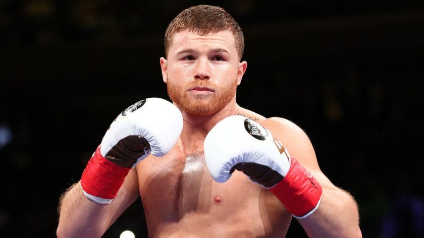
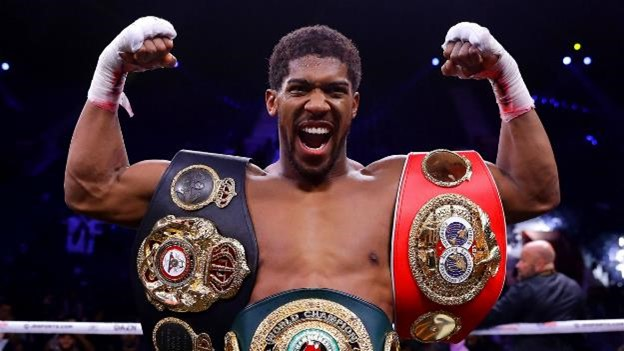
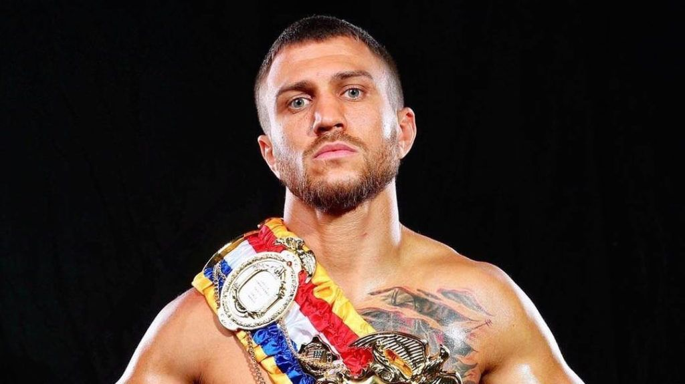

Boxing World History
Canelo Álvarez

Santos Saúl Álvarez Barragán (born 18 July 1990), better known as
"Canelo" Álvarez, is a Mexican professional boxer who has won multiple
world championships in four weight classes, including light middleweight,
middleweight, super middleweight, and light heavyweight, becoming the fourth
Mexican boxer (after Érik Morales, Jorge Arce and Juan Manuel Márquez) to
become a world champion in four weight classes. He is currently a unified super
middleweight world champion, having held the WBA (Super), WBC, and
Ring magazine titles since 2020.
Álvarez is known as an excellent counterpuncher,
being able to exploit openings in his opponents'
guards while avoiding punches with head and body movement.
He is also known as a formidable body puncher.
As of January 2021, Álvarez is ranked as the world's best active boxer,
pound for pound, by BoxRec; The Ring; the Boxing Writers
Association of America and the TBRB; and second by ESPN.
He is also ranked as the world's best active super middleweight by BoxRec,
The Ring, TBRB, and ESPN.
Anthony Joshua

Anthony Oluwafemi Olaseni Joshua, OBE (born 15 October 1989) is a British
professional boxer. He is a two-time unified world heavyweight champion,
having held the WBA (Super), IBF, WBO, and IBO titles since December 2019,
and previously between 2016 and June 2019. At regional level,
he held the British and Commonwealth heavyweight titles from 2015 to 2016.
As an amateur, Joshua represented England at the 2011 World Championships in
the super-heavyweight division, winning a silver medal. He also represented
Great Britain at the 2012 Olympics, winning gold. In 2014, a year after turning
professional, he was named Prospect of the Year by The Ring magazine. In 2017,
his victorious fight against Wladimir Klitschko was named Fight of the Year by
The Ring and the Boxing Writers Association of America. Joshua is the second
British boxer, after James DeGale, to win both a gold medal at the Olympics
and a world title by a major professional sanctioning body, as well as the
first British heavyweight to do so.
Lomachenko

Vasyl Anatoliyovych Lomachenko (born 17 February 1988) is a Ukrainian
professional boxer. He is a former world champion in three weight classes,
having held the WBO featherweight title from 2014 to 2015; the WBO junior
lightweight title from 2016 to 2017; and the unified WBA (Super),
WBC, WBO and Ring magazine lightweight titles between 2018 and October 2020.
Lomachenko is one of the most successful amateur boxers of all time,
possessing a record of 396 wins and 1 loss, with that loss avenged twice.
Competing in the featherweight and lightweight divisions, he won a silver
medal at the 2007 World Championships, gold at the 2008 European Championships,
consecutive gold at the 2008 and 2012 Olympics, and consecutive gold at the
2009 and 2011 World Championships. He is known for his exceptional hand speed,
timing, accuracy, creativity, athleticism, defense and footwork.